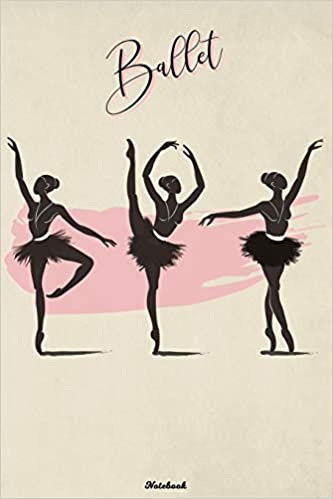
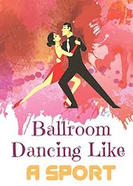
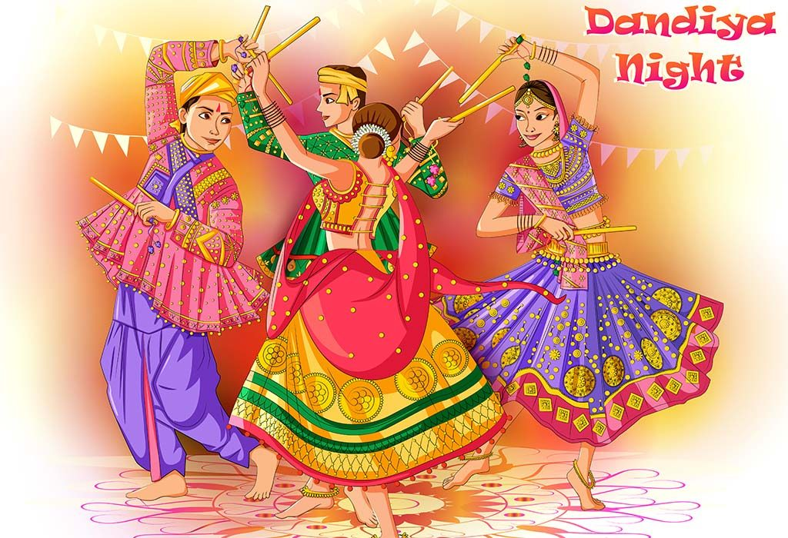
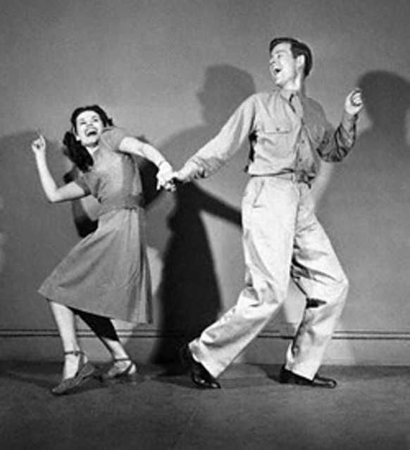

By using our tutorial hub, you can learn various typpes of dance types.
Step by Step you will be knowing varoius dance types and it originates from.
To help your search we’ve put together the best types of dancer who help you by videoes

Ballet
- Ballet (French: [balɛ]) is a type of performance dance
- originated during the Italian Renaissance in the fifteenth century
- it developed into a concert dance form in France and Russia.

ballroom
- Ballroom dance is a set of partner dances, which are enjoyed both socially and competitively around the world.
- Ballroom dancing is also widely enjoyed on stage, film, and television
contempory
- Contemporary dance is a style of interpretive dance that embraces innovation, blending techniques from various genres.
- Contemporary dance embodies ballet, modern, jazz and lyrical

Folk Dance
- A folk dance is a dance that reflects the life of the people of a certain country or region.
- For example, ritual dances or dances of ritual origin are not considered to be folk dances.
hiphop
- Hip hop dance is a range of street dance styles primarily performed to hip hop music or that have evolved as part of hip hop culture.
- It is influenced by a wide range of styles that were created in the 1970s and made popular by dance crews in the United States.
Irish Dance
- Irish dance refers to a group of traditional dance forms originating from Ireland
- it is originated in 18th century
Jazz Dance
- Jazz dance is a social dance style that emerged at the turn of the 20th century .
- The two types expand on African American vernacular styles of dance that arose with jazz music.

Swing Dance
- Swing dance is a group of social dances
- it is developed with the swing style of jazz music in the 1920s–1940s